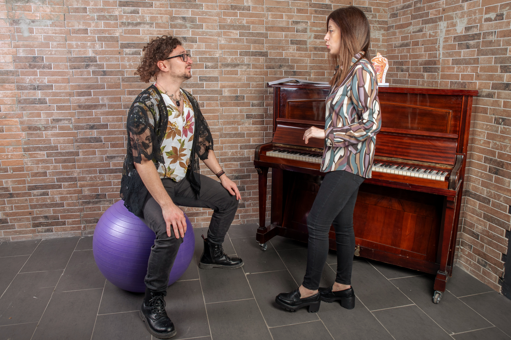
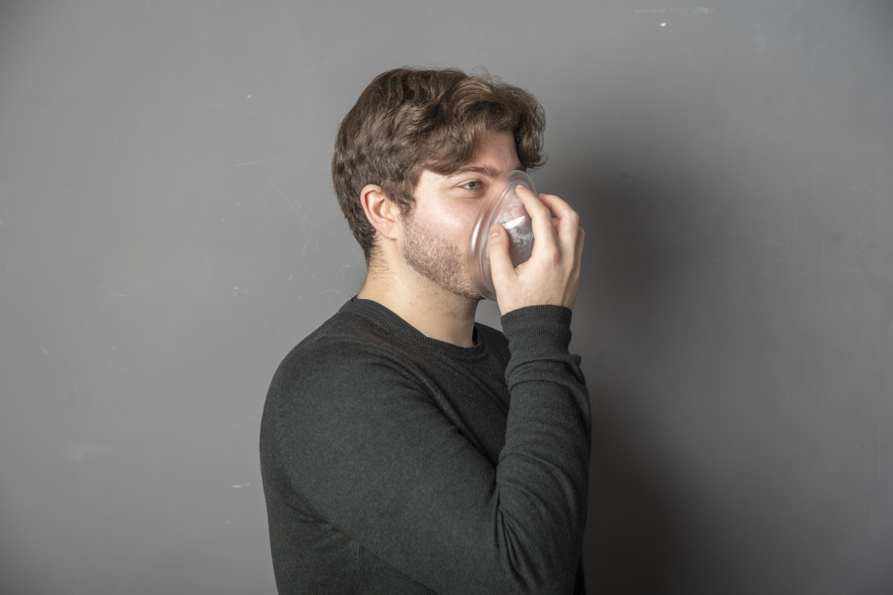

Qui trovi i miei percorsi principali: dal lavoro one-to-one per cantanti e cantautori, alla voce parlata per la comunicazione professionale, fino allo sviluppo del progetto artistico.
Ogni percorso è costruito con un approccio esperienziale, gentile e concreto: osservazione, ascolto e strategie su misura. Niente modelli imposti: lavoriamo su ciò che ti serve davvero, con un ritmo sostenibile per te.
👉 Se vuoi orientarti insieme, scrivimi dalla home: rispondo volentieri.

Le lezioni one-to-one sono percorsi individuali pensati su misura per ogni allievo: che stia muovendo i primi passi o lavorando su obiettivi più avanzati e professionali.
Il percorso parte sempre dalla persona: dalla sua voce e dalla sua storia. Come saprai, la voce è unica, così come lo è il modo in cui viene usata e vissuta. Per questo il lavoro tiene conto di diversi aspetti: dal tipo di corda vocale alla struttura corporea, fino alle esperienze personali e artistiche che influenzano il modo di usare la voce.
Il lavoro procede in modo graduale e consapevole, partendo dalla consapevolezza corporea, per sviluppare nel tempo una maggiore propriocezione e connessione con se stessi. Segue un lavoro sulla postura, finalizzato a favorire una respirazione funzionale alle necessità espressive, e un lavoro di allenamento tecnico, costruito in modo mirato e progressivo, senza forzature.
Ogni elemento viene affrontato in relazione agli altri, perché la voce non è mai un gesto isolato, ma il risultato di un sistema che coinvolge corpo, respiro, intenzione ed espressione.
Approccio e struttura
Didattica evoluta e non standardizzata
⌄
Questo approccio si ispira a una visione della didattica vocale evoluta e non standardizzata, in linea con i principi del Voice Evolution Institute, di cui sono Certified Vocal Trainer, che pone al centro l’osservazione, l’ascolto e l’adattamento del lavoro alle reali esigenze dell’allievo. Non esistono protocolli uguali per tutti, ma strumenti e strategie che vengono scelti e modellati di volta in volta.
Le lezioni one-to-one possono svolgersi in presenza, nella Sala Performance, oppure online, attraverso la Sala Regia, mantenendo la stessa cura, attenzione e qualità del lavoro. In entrambi i casi, l’obiettivo è accompagnarti in un percorso di crescita vocale consapevole, concreto e duraturo.

Accanto al lavoro sulla voce cantata, propongo percorsi one-to-one dedicati alla voce parlata, pensati per te se utilizzi la voce quotidianamente come strumento di lavoro: insegnante, speaker, formatore, professionista della comunicazione o semplicemente se senti il bisogno di parlare con maggiore efficacia, chiarezza e sostenibilità.
Il training non riguarda solo l’emissione, ma un insieme di aspetti che coinvolgono respiro, postura, articolazione, ritmo, prosodia e prossemica. L’obiettivo è aiutarti a sviluppare una voce funzionale, stabile e naturale, capace di sostenere anche carichi di lavoro vocali intensi, senza affaticamento e, soprattutto, adeguata allo scopo comunicativo che desideri raggiungere.
Buone abitudini e sostenibilità
Proteggere la voce nel tempo
⌄
Un’attenzione particolare è dedicata all’igiene vocale e alla costruzione di buone abitudini: impari a riconoscere i segnali di stress vocale, a prevenire sovraccarichi e tensioni e a integrare strategie pratiche per proteggere la tua voce nel tempo. Questo significa lavorare sulla gestione dello sforzo, sull’organizzazione dell’uso vocale nella giornata e su comportamenti utili a mantenere la voce sana ed efficiente.
Il percorso include anche strumenti per fronteggiare lo stress e l’ansia da prestazione, frequenti in situazioni come lezioni, conferenze, presentazioni o interventi in pubblico, aiutandoti a parlare con maggiore sicurezza e presenza.
Le lezioni sono completamente personalizzate e costruite sulle tue esigenze specifiche, con l’obiettivo di rendere la tua voce parlata efficiente, efficace, sostenibile e, soprattutto, coerente con la tua identità comunicativa.

Una parte importante del mio lavoro è dedicata agli artisti emergenti, che accompagno in un percorso di crescita artistica e vocale, seguendoli passo dopo passo nello sviluppo dei loro progetti discografici. Il percorso non riguarda solo il training vocale, ma un lavoro specifico sull’artista e sul progetto.
La voce viene allenata in funzione del materiale musicale, affinando tecnica ed espressività in vista di registrazione e performance.
Come lavoriamo sui brani
Interpretazione, fraseggio, dinamiche
⌄
Il lavoro sui brani è un momento centrale del percorso: analizzo insieme all’artista le canzoni per costruire un lavoro accurato che ne valorizzi ogni aspetto, non solo tecnico ma anche interpretativo, di fraseggio e di dinamiche.
Non intervengo per dare una forma prestabilita: per me è fondamentale che sia l’artista a esprimersi e a far emergere la propria identità. Il mio ruolo è quello di facilitare questo processo, creando le condizioni perché la voce e il brano possano trovare la loro direzione in modo autentico e personale.
Accanto al lavoro artistico e vocale, divento anche una guida e un supporto nella gestione degli aspetti emotivi legati alla performance. Ansia da prestazione, tensioni, momenti di sconforto o di insicurezza fanno spesso parte del percorso di un artista. Insieme lavoriamo per riconoscere e affrontare questi stati, sviluppando maggiore consapevolezza, fiducia e presenza, affinché l’energia emotiva possa diventare una risorsa e non un ostacolo.
Accompagno inoltre l’artista nelle sessioni di registrazione, curando la preparazione tecnica e interpretativa per affrontare lo studio con maggiore consapevolezza, efficacia e professionalità. Questo lavoro si inserisce anche all’interno di una collaborazione attiva con Noise Symphony Music, realtà con cui condivido una visione attenta alla qualità artistica e allo sviluppo autentico dei progetti.
Con Francesco Tosoni, produttore con cui seguo gli artisti nella fase di produzione, contribuisco a creare un ponte concreto tra il percorso vocale, il lavoro creativo e la realizzazione discografica.
L’obiettivo è costruire un progetto solido, coerente e autentico, pronto ad affacciarsi a un contesto musicale sempre più competitivo.
Se senti che è il momento di lavorare in modo strutturato sul tuo progetto artistico, prenota una call conoscitiva gratuita, senza impegno: un primo incontro per conoscerci, confrontarci sui tuoi obiettivi e capire se possiamo lavorare insieme.

La mia didattica integra continuamente ricerca e formazione. Il Voice Evolution Institute è un riferimento fondamentale per un approccio evoluto e non standardizzato al training vocale.
Diploma in Canto Moderno — Voice Evolution Institute
Percorso strutturato, progressivo e professionale
⌄
Se il tuo obiettivo è professionalizzarti come cantante, ma anche se sei una persona curiosa e senti il desiderio di approfondire il lavoro sulla voce, sulla musica e sugli stili del canto moderno, posso proporti il Diploma in Canto Moderno del Voice Evolution Institute.
Si tratta di un percorso strutturato e progressivo, pensato per chi desidera costruire competenze tecniche, musicali ed espressive solide. Non è una formazione veloce, ma un percorso che richiede tempo, continuità e un coinvolgimento reale.
Il diploma è articolato in quattro livelli, e ognuno di essi prevede un esame di verifica. Durante il percorso sarò io a seguirti nel lavoro settimanale, accompagnandoti passo dopo passo nella preparazione tecnica, musicale ed espressiva. Al termine di ogni livello, l’esame viene sostenuto con un trainer del sistema VES®, diverso da me, così da garantire una valutazione esterna, oggettiva e professionale.
Il lavoro si basa principalmente su lezioni individuali, che possono svolgersi in presenza, online o in modalità mista, permettendoti di organizzare lo studio in modo flessibile e in linea con le tue esigenze. I programmi didattici ufficiali sono sempre consultabili tramite i link dedicati.
Accanto al lavoro individuale, il percorso include laboratori gratuiti di approfondimento, dedicati a ear training, anatomia e fisiologia della voce, songwriting, armonie vocali e preparazione alla performance. Questi momenti collettivi affiancano lo studio personale e offrono l’occasione di fare esperienza di gruppo e confronto con altri cantanti.
🎛️ Tecnica vocale
Per sviluppare controllo, potenza e resistenza attraverso un allenamento costruito su misura.
🎧 Ear training
Per migliorare intonazione, ascolto e consapevolezza musicale.
🎼 Stile
Per affrontare i principali linguaggi del canto moderno, valorizzando le caratteristiche di ogni genere.
✨ Improvvisazione
Per stimolare creatività e libertà espressiva, rendendo la performance più personale.
🎭 Interpretazione
Per comunicare in modo autentico ciò che desideri esprimere attraverso la voce.
🔥 Presenza scenica
Per salire sul palco con maggiore sicurezza e creare una connessione reale con il pubblico.
Completando tutti i livelli si ottiene il Diploma Professionale in Canto Moderno VES®, una certificazione privata rilasciata dal Voice Evolution Institute che attesta il livello di competenza raggiunto. È un traguardo importante, ma anche una base solida da cui continuare a crescere come cantante e come artista.
Se senti il bisogno di dare una direzione più chiara al tuo percorso, di metterti alla prova e di lavorare sulla voce con metodo e continuità, questo diploma può essere uno strumento valido. Possiamo parlarne insieme, capire se è il percorso giusto per te e valutare come integrarlo al lavoro che stai già facendo sulla tua voce.
Formazione docenti e didattica della voce — Voice Evolution Institute
Pedagogia e relazione
⌄
Accanto al lavoro con cantanti e professionisti della voce, mi occupo anche di formazione all’interno del percorso VES dedicato alla didattica della voce e alla preparazione degli insegnanti certificati.
Se stai valutando un percorso di formazione per diventare insegnante di canto o di voce, è importante sapere che il Voice Evolution Institute è un sistema all’avanguardia, costruito su una visione ampia e interdisciplinare della voce. All’interno del percorso lavorano e collaborano diverse figure professionali — vocal trainer, formatori, professionisti dell’ambito artistico, pedagogico e scientifico — con l’obiettivo comune di formare insegnanti consapevoli, competenti e aggiornati.
In questo contesto, faccio parte del corpo docente e mi occupo in modo specifico della formazione pedagogica, accompagnandoti nello sviluppo delle competenze legate alla didattica, alla relazione con l’allievo e alla costruzione di un approccio educativo coerente, etico e personalizzato.
Il lavoro formativo non riguarda solo cosa insegnare, ma soprattutto come farlo: osservazione, ascolto, capacità di adattare il metodo e responsabilità nel lavoro sulla voce altrui.
Come istituto abbiamo 2 percorsi di certificazione:
Se desideri approfondire questo percorso e capire se è in linea con i tuoi obiettivi formativi e professionali, puoi contattare direttamente la segreteria dell’istituto per una call informativa, un momento utile per ricevere tutte le informazioni necessarie in modo chiaro e diretto.